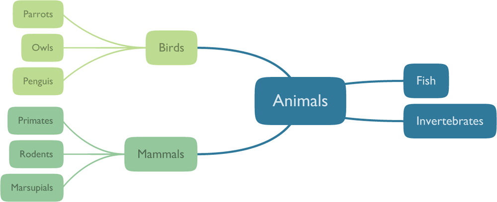
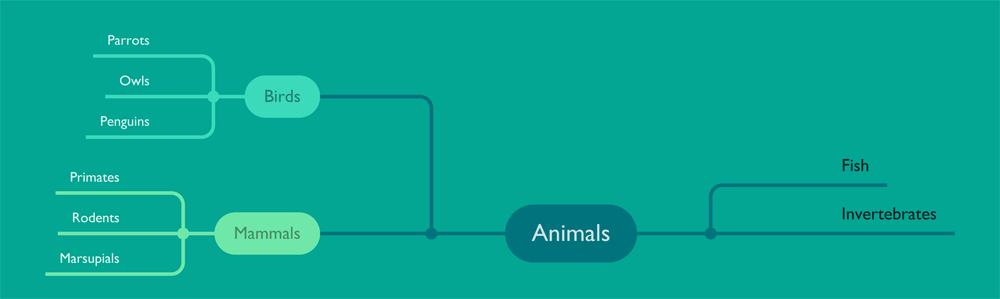

Quickstart
twyg expects plain-text JSON files as input that describe the tree to be drawn. These JSON files only contain the topology of the tree and the text labels of the individual tree nodes. They do not contain any information on how the tree should be visually rendered.
The visual appearance of the tree is described in configuration files. Several built-in configurations are included that can be used out-of-the-box. That way, one doesn't need to learn the intricacies of the custom configuration language to get pretty looking results quickly.
The benefit of separating the visual style from the tree data itself is that this way one can easily render the same tree in different visual styles by just using a different configuration file. Moreover, configurations can defined in a generative manner, which means that almost all visual properties of the output can be controlled by expressions that depend on the characteristics of the tree (e.g. the color or shape of a node can be a function of its hierarchical position in the tree). This allows for crafting very flexible configurations that can be applied to trees of arbitrary size and complexity.
Below is a sample JSON file and the corresponding output that was generated using the default configuration:
{
"Animals": [
{"Birds": [
"Parrots",
"Owls",
"Penguins"
]},
{"Mammals": [
"Primates",
"Rodents",
"Marsupials"
]},
"Fish",
"Invertebrates"
}

To generate this tree as a PDF file, create a text file
example.json containing the JSON data above and then execute
this command:
twyg.py example.json example.pdf
You can also specify the configuration and colorscheme to use as shown below (see the examples page for samples of the built-in colorschemes and configurations). The output format is determined by the extension of the output file, which in this case will be PNG:
twyg.py --config nazca --colorscheme azure example.json example.png
Refer to the documentation for a full description of all available command line options and to learn how to create your own custom configurations.